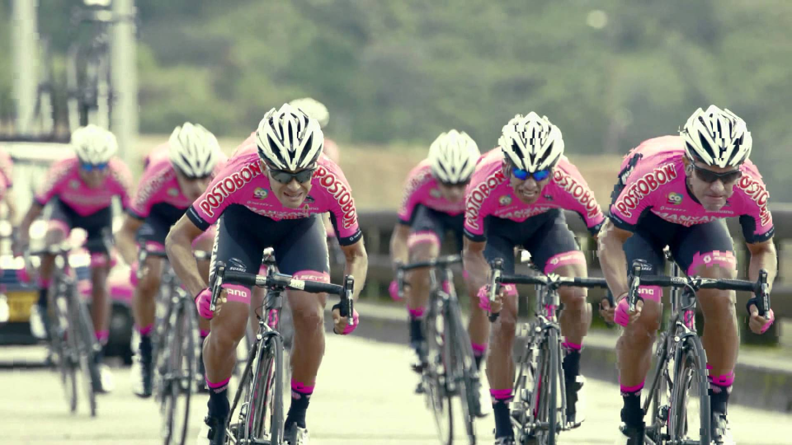

Equipos de ciclismo de ruta nacional
Campeonato Nacional de Ruta: Así será la 1a Jornada, Epm-Une y Sérika Guluma los favoritos
EQUIPO POSTOBON
Manzana Postobón ha sido una marca ligada a la historia y trayectoria del ciclismo mundial. En los años 80`s y 90`s fue gran protagonista en diversas carreteras de Europa, con grandes nombres, como Reynel Montoya, Pablo Wilches, Álvaro Mejía, Óscar de J. Vargas, Lucho Herrera entre otros. Un grupo de jóvenes talentos recogen esas banderas, para regresar la marca al más alto nivel del ciclismo nacional e internacional. Este será un equipo que dedicará sus esfuerzos a forjar una nueva era del pedalismo nacional, enmarcando el actuar en los valores que se deben promover y compartir con nuestro país.
Enlace siguente pagina
clic ir segunda paginalos mejores integrantes del equipo postobon
EQUIPO MANZANA POSTOBON
Manzana Postobón Team, es un equipo ciclista profesional colombiano de categoría Continental a partir de la temporada 20161 bajo la dirección de la corporación Pedaleamos por Colombia enfocado en competencias internacionales, nacionales y regionales
Fue creado en 2007 como equipo Continental y con el nombre de Colombia es Pasión Team2 (y posteriormente llamado Colombia es Pasión-Coldeportes). En el 2010 empezó a ser también patrocinado por Café de Colombia (Café de Colombia-Colombia es Pasión), con la intención de rememorar éxitos pasados.3 A finales de 2010 entró como patrocinador 4-72 (red postal de Colombia) por lo que solían introducir dicho patrocinador en el nombre del equipo a pesar de que oficialmente no fuera así, especialmente para las carreras sudamericanas. Logró adquirir la licencia como equipo Profesional Continental a partir del 1 de enero de 2011, lo que le daría acceso a correr el Tour de Francia, Giro de Italia, la Vuelta a España y las demás carreras del UCI WorldTour (máxima categoría del ciclismo en ruta, llamado anteriormente UCI World Calendar y UCI ProTour), aunque finalmente sólo fue invitado a la Vuelta a Cataluña
A finales de 2011 y tras el retiro del patrocinador Coldeportes, el equipo dejó de ser categoría profesional y se enfocó en la preparación de ciclistas sub-23, retornando a la categoría Continental en 2013. Nuevamente a finales del 2014 la junta directiva del equipo confirmó que el equipo deja de ser categoría Continental pero continuará con una plantilla de corredores más pequeña enfocado netamente a la búsqueda de nuevos jóvenes talentos.
camiseta oficial de manzana postobon
En Suarez estamos felices de volver a contar con un equipo grande que regresa a las carreteras, como lo es el equipo Manzana Postobón.
El equipo siempre ha estado siempre ligado a la historia y trayectoria del ciclismo colombiano y mundial. En los años 80`s y 90`s fue gran protagonista en diversas carreteras de Europa, con grandes nombres, como Reynel Montoya, Pablo Wilches, Álvaro Mejía, Óscar de J. Vargas, Lucho Herrera entre otros
Es un equipo que a través de sus valores ha permitido hacer y proyectar la mejor imagen del ciclismo colombiano en el exterior, devolviéndole al país, la confianza en el deporte que más glorias le ha entregado, el ciclismo.
nomina 2016
“Una nómina bastante buena, hemos dado la alternativa de que entren a la filosofía de nuestro equipo unos corredores que son interesantes, a pesar de que son jóvenes, ya tienen experiencia en el campo de la ruta sobre todo en Europa. Buscamos un equipo más definidor, más compacto en la montaña, que las carreras Sub-23 las pueda resolver y en la élite se tenga protagonismo, es una nómina muy versátil”. Expresó el director deportivo Luis Fernando Saldarriaga
Cabe recordar que este año, el equipo rosa logró la victoria de la segunda etapa en la Vuelta de la Juventud, el título general, categoría Sub-23 y de las metas volantes de la Clásica del Caribe, además de campeones Sub-23 de la Vuelta a Colombia con Hernán Aguirre
Este será un equipo que dedicará sus esfuerzos para forjar una nueva era del pedalismo nacional e internacional y el espacio perfecto para luchar por ese objetivo, será inicialmente en la categoría continental del ciclismo mundial, porque el sueño va más allá, ser continental profesional en el 2017
El Manzana Postobón Team regresará al viejo continente para participar en 14 carreras, distribuidas entre España, Portugal y Francia, la gran mayoría para corredores Sub-23, comenzando en el mes de marzo con la Volta Lentejo de Portugal, carrera 2.2.